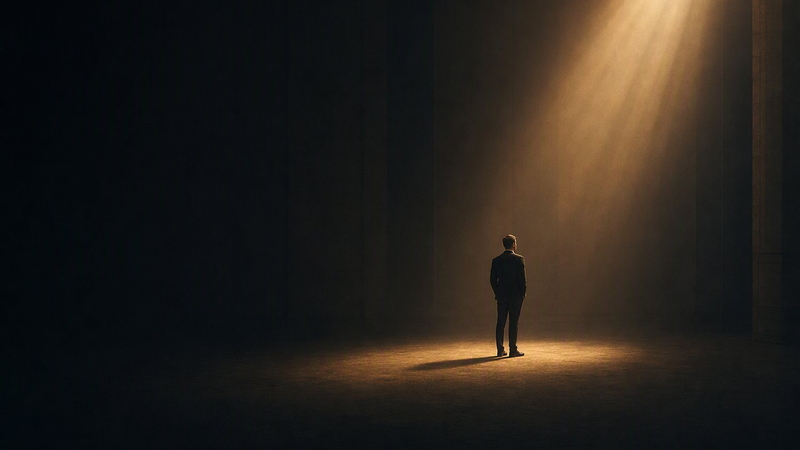
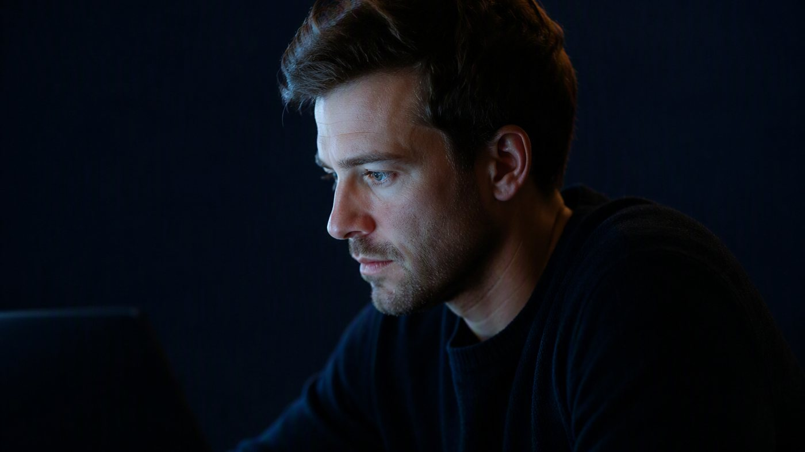
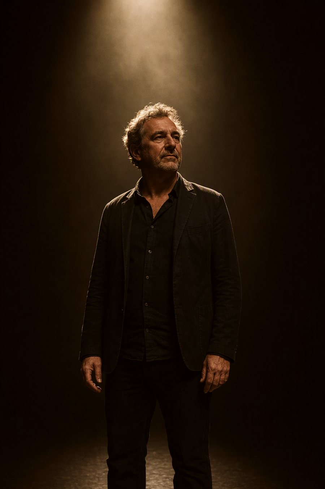

Recognition should follow substance.
In most fields the most visible voice is not the most qualified one. We exist to close that gap for people who have already done the work.

We create premium virtual panel experiences that place established experts at the center of a conversation they are qualified to lead.
Concept, panel, production and promotional assets are ours. The expertise is theirs. What we hand back is a produced event, a clean recording, and content cut from it that is still usable long after the room has closed.
The longer version of the ambition is a market where the most qualified voice in a field is also the most visible one. Visibility is not vanity. It is how the right people finally find the expertise they need.


Five words, and what each one costs us.
Every decision here, from a color to a run of show, has to earn at least one of them, and each one also rules something out. Sophisticated, so we never shout to be heard. Commanding, so we never hedge or over explain. Credible, so we never promise what we cannot produce. Empowering, so we never talk down to a client. Produced, so we never ship anything unfinished.
What we are
A production studio, an authority platform, a professional network and a content engine, run as one three month engagement. Own Your Stage Studio, LLC is a Florida limited liability company. Events are produced virtually, for clients anywhere.
What we are not
Not an event planning company: we do not run your calendar, we build one event and position you at the middle of it. Not a low cost webinar service: the price is three thousand dollars, and what that buys is the casting, the branding, the production and the content, not a Zoom license. Not a personal coaching brand, and not a theater production. The stage language is about visibility, not performance.